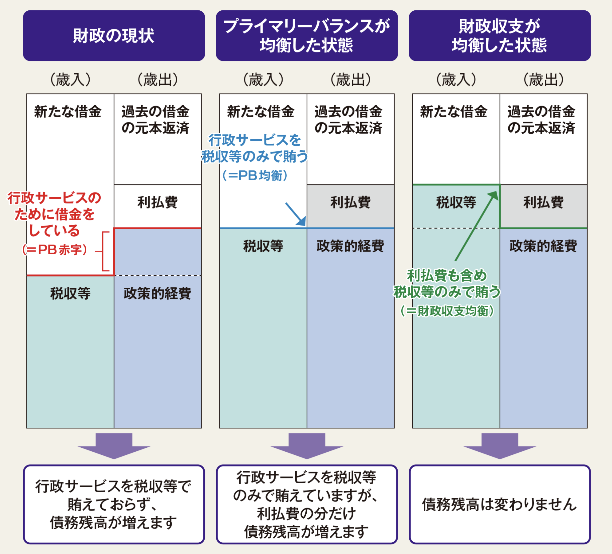

プライマリーバランスとは何か
プライマリーバランス（PB）とは、社会保障や公共事業をはじめ様々な行政サービスを提供するための経費（政策的経費）を、税収等で賄えているかどうかを示す指標です。
現在、日本のPBは赤字であり、政策的経費を借金で賄っている状況です。
（2025年度の一般会計予算ではPBは
4.5兆円の赤字
です）
「政策的経費+利払費」が「税収等」を上回ることを「財政収支が赤字」といい、
現在の日本は財政収支の赤字が続いた結果、令和6年度末の
公債金残高は約1,129兆円
に達する見込みです。

出所：財務省「これからの日本のために財政を考える」
HOME